Meldungen und Statusausgaben
RapidBATCH ist mit einer Vielzahl von build-in Dialogen ausgestattet, die individuell angepasst und optimal in Ihren Scripts eingesetzt werden können. Bevor Sie anfangen, selber komplett eigene Dialoge in RapidBATCH zu kreieren (was auch möglich ist) sollten Sie erst einmal schauen, ob bereits die RapidBATCH build-in Dialoge für Ihren Anwendungsfall ausreichen. Der Vorteil bei den build-in Dialogen von RapidBATCH besteht nämlich darin, dass Sie nur eine einzige Anweisung oder Funktion aufrufen müssen, um den kompletten Dialog zu starten. Bei selbst programmierten Dialogfenstern, wozu wir in einem späteren Kapitel kommen werden, müssen Sie für jedes Ereignis mit oder auf dem Dialog eine entsprechende Routine programmieren, was dann wiederum mehr Aufwand erfordert. Dieses Kapitel stellt nun die von RapidBATCH bereitgestellten build-in Dialoge vor und zeigt auf, wie diese angewendet und angepasst werden können.
Meldungsfenster, so genannte Messageboxes, bieten die einfachste Art, dem Benutzer Meldungen oder Daten zu präsentieren oder auch um einfache Abfragen bereitzustellen. Bereits kennengelernt haben Sie die ECHO-Anweisung, mit der Sie ein Meldungsfenster mit dem übergebenen Wert auf dem Bildschirm ausgeben lassen können. ECHO dient zur einfachsten Ausgabe einer Information, daher wird sie auch oft in unseren Beispielen benutzt.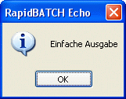
Einfache Ausgabe von Informationen und Meldungen mit dem ECHO-Dialog
Ähnlichen Zweck erfüllt auch die CONFIRM-Funktion, die einen Benutzerdialog mit Ja-Nein-Option anzeigt. CONFIRM erwartet als Parameter eine Rückgabe-Variable (die Auskunft über den gedrückten Button gibt) und einen Aufforderungstext bzw. eine Frage, die mit "Ja" oder "Nein" beantwortet werden kann. Wenn der Button "Ja" geklickt wurde, wird der Wert '0' an die Rückgabe-Variable zurückgegeben, bei "Nein" der Wert '-1'.
Ja-Nein-Auswahl mit dem CONFIRM-Dialog
%start
rem Abfrage: Script beenden?
confirm [ende] = 'Möchten Sie das Script beenden?'
rem Wenn "Nein" gedrückt wurde, springe zum Anfang
if [ende] = '-1' goto start
echo 'Script beendet.'
end
ECHO und CONFIRM bieten somit eine einfache Möglichkeit, schnell einen Wert zu präsentieren oder eine einfache Ja-Nein-Abfrage zu gestalten.
Um aber eine Messagebox individueller zu gestalten, bietet Ihnen RapidBATCH die MSGBOX-Anweisung. MSGBOX benötigt als Parameter einen Titel, einen Meldungstext sowie einen Messagebox-Style, der als Zahl definiert wird.
Eine ganz einfache Messagebox wäre hier:
msgbox 'Meldung', 'Hello World', '0'
Welcher der angezeigten Buttons gedrückt wurde, wird in die vordeklarierte Variable [errorcode] gespeichert (im obigen Beispiel immer 0, weil ja nur ein Button zur Auswahl steht). [errorcode] ist eine Variable, die von vielen Anweisungen in RapidBATCH verschiedene Status- oder Fehlercodes erhält. Eben hier, welcher Button gedrückt wurde.Ein Messagebox-Style setzt sich aus einem so genannten Button-Wert und einem Icon-Wert zusammen. Zudem lässt sich auch die Position des Eingabefokus (welcher Button gedrückt wird, wenn der Benutzer nur die Entertaste betätigt) mit diesem Wert bestimmen.
Mögliche Button-Styles für Messageboxes sind:
| Style-ID: | Beispiel: | Button-Style (jew. Rückgabewert an [errorcode] in Klammern): |
| 0 | 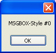 | OK (1) |
| 1 | 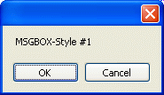 | OK (1) + CANCEL (2) |
| 2 | 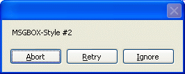 | CANCEL (3) + RETRY (4) + IGNORE (5) |
| 3 | 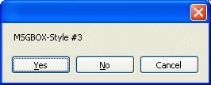 | YES (6) + NO (7) + CANCEL (2) |
| 4 | 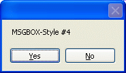 | YES (6) + NO (7) |
| 5 | 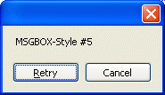 | RETRY (4) + CANCEL (2) |
Rechnet man zum gewünschten Button-Style noch einen der folgenden Werte hinzu, so kann man auch eines der vier Standard-Icons bestimmten.
| Icon-Style: | Beispiel: |
| 0 | 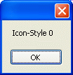 |
| 16 | 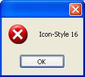 |
| 32 | 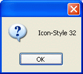 |
| 48 | 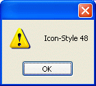 |
| 64 | 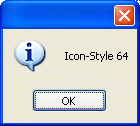 |
Ein Beispiel wäre hier
%start
msgbox 'Eine Frage!', 'Klicken Sie einen der Buttons!', '48' + '4'
if [errorcode] = '6'
rem Fall: Ja
echo 'Sie haben "Ja" angeklickt'
goto start
elseif [errorcode] = '7'
rem Fall: Nein
echo 'Sie haben "Nein" angeklickt'
goto start
else
rem Fall: Abbruch
echo 'Und tschüss...'
endif
end
Wenn man zum Style noch den Wert 0 (für den ersten), 256 (für den zweiten) oder 512 (für den dritten) hinzurechnet, kann man den Eingabefokus auch direkt auf einen der Buttons setzen. Welcher Button den Focus hat sieht man an dem kleinen, getrichelten Kasten um den Button herum. Hat ein Button den Focus, so wird dieser Button ausgelöst, wenn der Benutzer einfach die Eingabetaste betätigt.
Beispiel:
msgbox 'Test1', 'Fokus 1', '64' + '3' + '0'
msgbox 'Test2', 'Fokus 2', '64' + '3' + '256'
msgbox 'Test3', 'Fokus 3', '64' + '3' + '512'
end
Neben den bis jetzt besprochenen Messageboxes bietet RapidBATCH aber auch eine andere Form der Meldungs- und Statusübermittlung: Die INFOBOX!
Manchmal ist es nötig, z.B. bei länger andauernden Operationen, eine Meldung in der Form "Bitte warten..." einzublenden. Die INFOBOX kann vom Programmierer daher völlig frei ein- oder ausgeblendet werden und besitzt weder einen "Ok"-Button noch kann sie verschoben oder in den Hintergrund gebracht werden.
Einblendung des INFOBOX-Dialoges
Ein einfaches Beispiel für die Verwendung der INFOBOX ist folgendes Script, das eine INFOBOX mit dem Text "Hello World" für 5 Sekunden einblendet. Zum Abwarten der 5 Sekunden wird hier das Script mit Hilfe der WAIT-Anweisung für 5000 Millisekunden (= 5 Sekunden) angehalten.
infobox 'Hello World', 'show'
wait '5000'
end
In unserem Fall wird die INFOBOX automatisch wieder ausgeblendet, weil das Script beendet ist. Um die INFOBOX manuell auszublenden, benutzen Sie INFOBOX noch einmal in der Form
infobox '', 'hide'
oder verwenden sie die professionellere Methode, indem Sie die vordeklarierte Variable [InfoBox_Enabled] auf den Wert 'hide' oder '-1' setzen (durch setzen auf 'show' oder '0' wird INFOBOX wieder angezeigt).
Beispiel:
echo 'INFOBOX wird jetzt eingeblendet...'
infobox 'Hello World', 'show'
wait '2000'
echo 'INFOBOX wird jetzt ausgeblendet...'
[InfoBox_Enabled] = 'hide'
echo 'INFOBOX ist jetzt ausgeblendet!'
end
Da INFOBOX ein komplett eigener Dialog von RapidBATCH ist (Messageboxes werden von Windows selber bereitgestellt), lässt er sich auch individualisieren, z.B. kann die Höhe und Breite des Dialogs mit Hilfe der vordeklarierten Variablen [InfoBox_Height] und [InfoBox_Width] vom Programmierer beeinflusst werden. Die Angabe der Größe erfolgt in Pixeln, die Zentrierung des Dialogs auf dem Bildschirm findet automatisch statt, kann aber auch durch das Setzen der Variablen [InfoBox_X] und [InfoBox_Y] auf eine beliebige Position des Bildschirms erfolgen. Wird [InfoBox_X] und/oder [InfoBox_Y] auf den Wert '0' gesetzt, erfolgt eine automatische Zentrierung des Dialogs auf der jeweiligen Achse (was der Standard-Einstellung entspricht).
Copyright © 2000-2006 by J.M.K S.F. Software Technologies, Jan Max Meyer
All rights reserved.